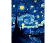

 see more on link
see more on link
STARY NIGHT
look up at the night sky, and find yourself immersed in the amazing mountain range of aspen. the atarry sky combined with the breathtaking scenery creates a moment of pure magic, leaving you in awe of nature's beauty.
- Immerse yourself in the serene beauty of aspen's majiestic mountain range under a srattu night sky.
- Experience the tranquility and wonder as the stunning scenery captivates your senses.
- Let the beauty of Aspen inspire awe and provide a peaceful escape from everyday life.
THE MAGIC OF GLOWING CREATURES
Did you know some animals and plants can glow in the dark? this cool trick is calles
bioluminence.
it
happens when a secial chemical reaction inside their bodies creates light. it's like nature's
version of
neon lights!
Here's how it works:
- A molecule called luiferin mixes with oxygen.
- An enzyme calles luciferase help speed up the process
- voila! Aglow appeares, but without heat-it's calles "cold light"
Where Do We See It?
Fireflise: they flash to talk to each oher and attract mates
Deep-sea fish: They use it scare pradators or lure prey.
Fungi and plants: Some even glow to attract bugs or spread spores!
see more on link